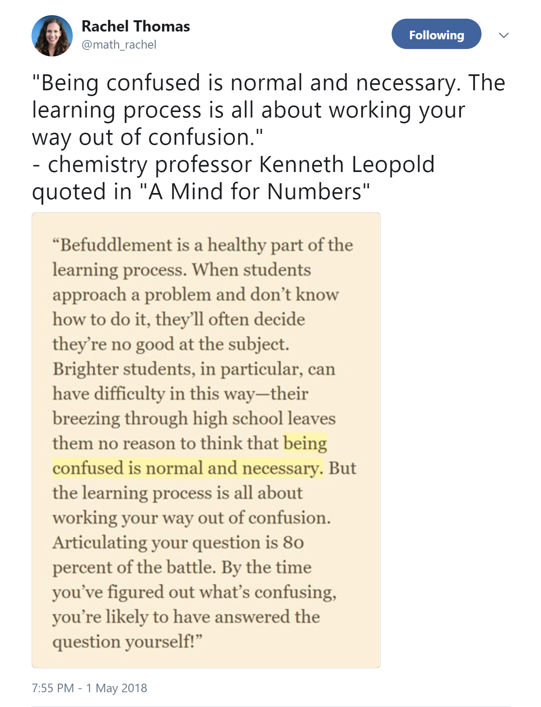

Praktikum IS
Block Natural Language Processing
https://djcordhose.github.io/ai/2018_haw_nlp_praktikum.html
Work in Progress
## Bewertung * _Stufe 3_: 13 bis 15 Punkte * _Nicht-offensichtliche komplexe_ Eigenschaften von Konzepten der künstlichen Intelligenz wurden erkannt * und zwar _ausreichend abstrakt und ausreichend verallgemeinert_. * Ein etwaiges Anwendungsumfeld wurde _korrekt, angemessen und effektiv_ analysiert und modelliert. * _Stufe 2_: 9 bis 12 Punkte * _Einzelne nicht-offensichtliche_ Eigenschaften von Konzepten der künstlichen Intelligenz wurden erkannt. * Ein etwaiges Anwendungsumfeld wurde _korrekt_ und _mit kleinen Einschränkungen angemessen_ analysiert und modelliert. * _Stufe 1_: 5 bis 8 Punkte * _Wenige recht offensichtliche_ Eigenschaften von Konzepten der künstlichen Intelligenz wurden erkannt. * Ein etwaiges Anwendungsumfeld wurde _in einfacher Weise_ so analysiert und modelliert, dass praktische Tests möglich sind.
### Praktikum: Organisatorisches * Ziel des Praktikums: etwas neues lernen * Wir sind jeden Montag zu sprechen * von 10:00 - 12:00 (12.81) oder * 17:30 - 18:30 (Vorlesungsraum) * Fragen und Diskussion * Praktikumsabnahme
### Letzter Abnahme-Termin für die Praktika * _Suche_: KW21, 23.05.2018 * _Lernen_: KW24, 11.06.2018 * _Natürliche Sprache_, erste Prüfungen möglich: KW26, 25.06.2018
### Prüfungstermine * KW26, 25.06.2018 * KW27 * KW29
### Prüfungen * Zwei Studierende haben ein gemeinsames Basisthema vorbereitet mit eigener, individueller Erweiterung. * Die Basis wird gemeinsam vorgetragen, also jeder mit ca. 50% Redeanteil. (5 Minuten) * Danach trägt jeder seine eigene Ergänzung vor. (2 x 5 Minuten). * Gesamtzeit 4 x 15 = 60 Minuten. * Die Ausarbeitungen sind individuell. * Die Noten werden auch individuell vergeben. * Einzelprüfung möglich, dann 7,5 bis 10 Minuten pro Thema.
#### Trost  https://twitter.com/math_rachel/status/991375671648702464
Mögliche Aufgaben für Praktium
## RNNs
## Beispiel bis Stufe 3: Ein eigenes Beispiel für RNNs finden * Startpunkt: Adder mit RNNs <small> Notebook: rnn-adder </small>
### Beispiel bis Stufe 3: World Model Zero nachbauen <img src='img/rf/world-models.gif' height="300px"> aufwändig, lokale Installation notwendig, aber Code und Tutorial ist vorhanden <small> Tutorial: https://medium.com/applied-data-science/how-to-build-your-own-world-model-using-python-and-keras-64fb388ba459 <br> Code: https://github.com/AppliedDataSciencePartners/WorldModels </small>
## NLP
## Sammlung von Datasätzen im Bereich NLP https://machinelearningmastery.com/datasets-natural-language-processing/
### Beispiel bis Stufe 3: Einen Übersetzer von Deutsch nach Englisch bauen 1. nachvollziehen (Stufe 1) 2. experimentieren (Stufe 2) oder 3. erweitern (Stufe 3) https://machinelearningmastery.com/develop-neural-machine-translation-system-keras/
### Beispiel bis Stufe 3: Einen Teil des iX-Tutorials 1. nachvollziehen (Stufe 1) 2. experimentieren (Stufe 2) oder 3. erweitern (Stufe 3) <small> Teil 1: https://www.heise.de/ix/artikel/2018/03/links/118.shtml <br> Teil 2: https://www.heise.de/ix/artikel/2018/04/links/124.shtml <br> Teil 3: https://www.heise.de/ix/artikel/2018/05/links/136.shtml </small>
### Beispiel bis Stufe 3: Einen Teil des iX-Tutorials 1. nachvollziehen (1) 2. experimentieren (2) oder 3. erweitern (3) <small> Teil 1: https://www.heise.de/ix/artikel/2018/03/links/118.shtml <br> Teil 2: https://www.heise.de/ix/artikel/2018/04/links/124.shtml <br> Teil 3: https://www.heise.de/ix/artikel/2018/05/links/136.shtml </small>
## Beispiel bis Stufe 3: Modelle für POS Tagging vergleichen Ein kleines Forschungsprojekt <small> https://en.wikipedia.org/wiki/Part-of-speech_tagging <br> https://spacy.io/api/#nn-model </small>
## Beispiel bis Stufe 3: Ein eigenes Beispiel für Sprachverarbeitung finden * Eher 2 wenn nur Vorverarbeitung * Eher 3 wenn komplettes Beispiel <small> Notebook als Startpunkt: text-prep oder rnn-sentiment </small>
## Beispiel bis Stufe 3: Stand der Forschung im Bereich Word Embeddings aufarbeiten geht alles über den Stoff der Vorlesung hinaus, allerdings muss nicht zwingend implementiert werden https://medium.com/huggingface/universal-word-sentence-embeddings-ce48ddc8fc3a
### Beispiel bis Stufe 2: Sentiment-Analyse verbessern * Dropout? * Mehr Units? * Mehr Layers? * Stufe 3 bei neuen Ideen <small> Notebook: rnn-sentiment </small>
### Beispiel bis Stufe 3: Classifying text with TensorFlow Estimators aufwändig, lokale Installation notwendig <small> https://medium.com/tensorflow/classifying-text-with-tensorflow-estimators-a99603033fbe </small>